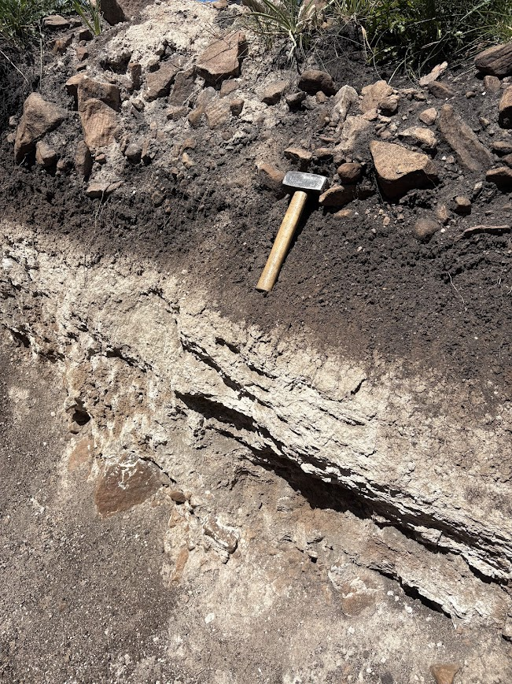

Consultora especializada en estudios geotécnicos y caracterización del subsuelo. Brindamos soluciones técnicas para obras civiles, infraestructura, recursos hídricos y gestión ambiental en todo el país.
Descubrir ServiciosOLM es una empresa argentina integrada por geólogos e ingenieros dedicada al estudio y caracterización del terreno. Nos regimos por estándares rigurosos, priorizando soluciones prácticas, seguras y adaptadas a las necesidades de cada cliente.
Nuestra formación en geociencias nos permite comprender el subsuelo de manera integral, evaluando no sólo sus condiciones geotécnicas, sino también sus aspectos hidrogeológicos y ambientales, fundamentales para la correcta planificación de un proyecto.

Ensayos SPT y DCP, extracción de muestras, descripción macroscópica del suelo y control de densidades in situ.
Clasificación SUCS y AASHTO, granulometría, límites de Atterberg, ensayos proctor y CBR, humedad natural y ensayos triaxiales.
Elaboración de informes geotécnicos completos: clasificación de suelos, perfil estratigráfico, tensiones admisibles y recomendaciones.
Estudios de impacto ambiental y sitios contaminados, análisis físco-químicos de aguas y determinación de nivel freático.
Ensayos realizados bajo normas técnicas
IRAM, ASTM y Vialidad Nacional.
Un estudio de suelo sólido es la base de toda gran obra. Contactanos para recibir asesoramiento técnico personalizado por parte de nuestros especialistas.
Escribinos Ahora